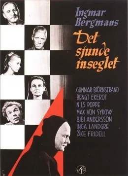
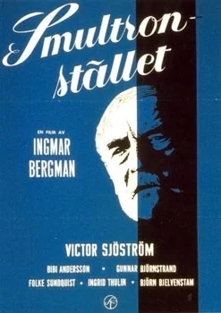

.jpg){kind=link}

Explore film ↗The Seventh Seal
Ingmar Bergman
DIRECTOR PROFILE
Ernst Ingmar Bergman (14 July 1918 – 30 July 2007) was a Swedish filmmaker and theatre director.
LIFE & CAREER
Ernst Ingmar Bergman (14 July 1918 – 30 July 2007) was a Swedish filmmaker and theatre director. He is considered one of the greatest and most important filmmakers in the history of cinema, most notably as a prominent figure of both European film industry and Swedish cinema. His films have been described as "profoundly personal meditations into the myriad struggles facing the psyche and the soul." Among his most acclaimed works are The Seventh Seal (1957), Wild Strawberries (1957), Persona (1966) and Fanny and Alexander (1982), which were included in the 2012 edition of Sight & Sound's Greatest Films of All Time.
Adapted excerpt from Wikipedia, CC BY-SA 4.0. Pronunciation notes omitted.
Read the full biographyImage: Joost Evers / Anefo. Source & rights: CC BY-SA 3.0 ↗.
Profile reference: Director background ↗
Open this director checklist ↗
A selection of this director’s films available in the archive.

Explore film ↗Ingmar Bergman

Explore film ↗Ingmar Bergman
 Explore film ↗
Explore film ↗Ingmar Bergman